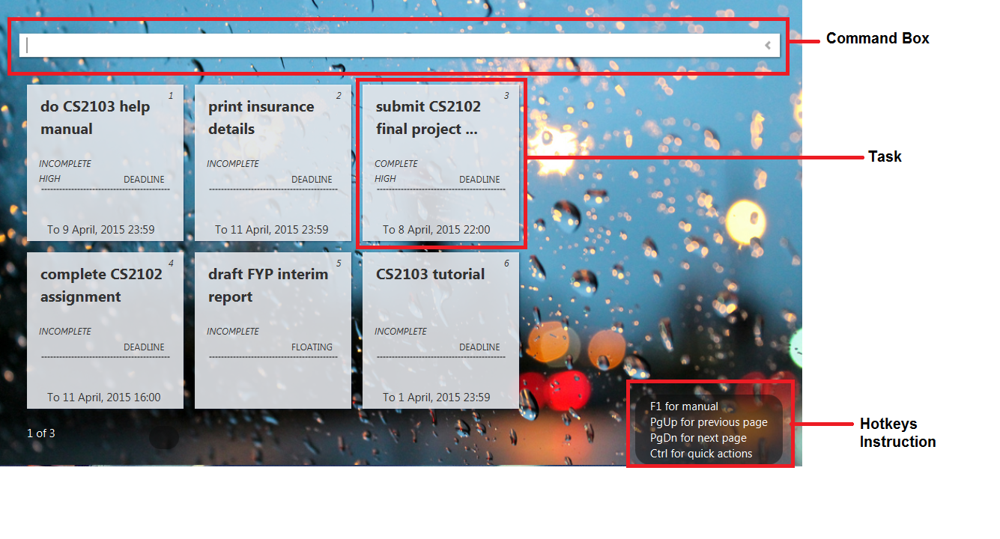
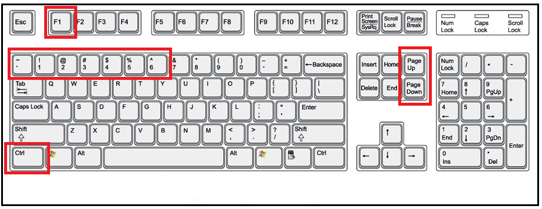
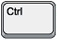
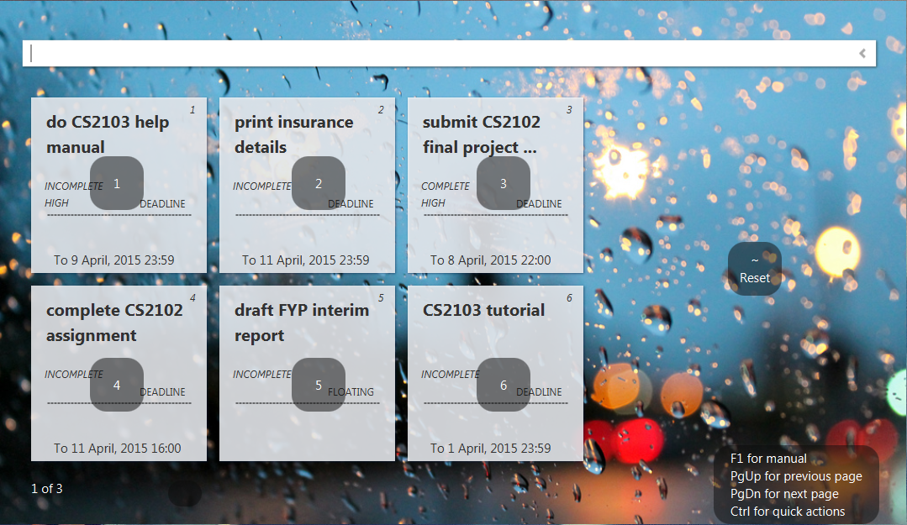
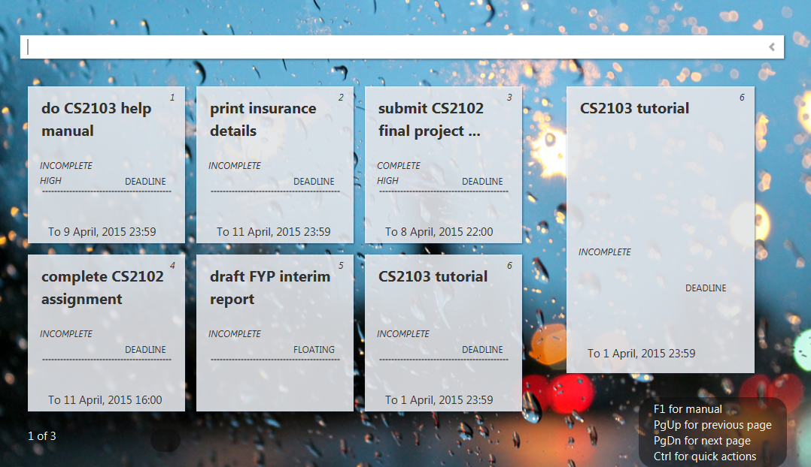

Command Box: Users will type command into the box and enter to execute it.
Task: Tasks will be show in its individual 'card' where all the information will be shown.

Press once and the help manual will be opened in user's computer default browser
 Press and hold to see the below options
Press to scroll between pages of task list
To exit, the user should enter 'exit' in the command box.

While holding onto , press one of these to show individual task information/close the information (Reset)
An example of looking into task number 6.

Created with the Personal Edition of HelpNDoc: Easily create EBooks